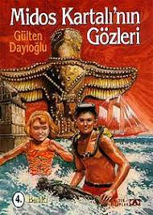

Melek Yolcu 02/03/2002 tarihinde Sakarya ilinin Serdivan İlçesinde çekirdek bir ailede en küçük çocuk olarak dünyaya geldi. Ilköğretim ve Ortaöğretimini tamamladıktan sonra şu anda hala Sakarya Üniversitesi Bilgisayar Mühendisliği Bölümünde yükseköğretimini tamamlamaktadır.
İlgi Alanlarım:
Yüzme:

Klasik Yüzme Sporu:
Yüzme sporuna henüz sekiz yaşında iken başladım ve uzun yıllar bu sporu devam ettirdim. Türkiye çapında çeşitli başarılar elde ettim. Şu an profesyonel olarak yüzmeye devam etmesem de benim için hala eğlenceli bir hobi olmayı sürdürmektedir.
Kitaplar:
Midos Kartalının Gözleri:
Benim için çocukluğumdan beri açık ara hobilerim arasında en başta yer alan şey kitap okumaktır. Ne yazık ki teknolojinin yaygınlaşması ile birlikte bu alışkanlığımın azalması beni üzmektedir. Bana kitap okumayı sevdiren yazar Gülten Dayıoğlu'ydu. Onunla ilk tanıştığım kitap Midos Kartalının Gözleri'ydi. Onun eserlerini okumaya devam ettim ve bu benim kitap okuma alışkanlığımı geliştirdi. İşte aşağıda bana kitap okumayı sevdiren tarihe merak saldıran o kitabın kapağını ve özetini bırakıyorum.
Müzik:

Muse:
Müzik dinlemek klişe bir tabir ile benim ruhumun ilacı. Boş vakitlerimde, yoğun duygular yaşadığımda, ders çalışırken, yemek yaparken kısacası her an hayatımın bir parçasıdır. Yıllardır pek çok tarzda müzik dinledim. Ortaokul ve lise yıllarımda daha marjinal olma çabasıyla farklı şeyler deneyimledim. O yıllarda daha çok Punk müziğe ilgi duyuyordum. Şimdilerde ise pop, arabesk, Türk sanat müzikleri daha çok ilgimi çekiyor. Ancak hiç vazgeçemediğim ve hala şarkıları arasından seçim yapamadığım bir grup var, o da Muse. İşte size aşağıda Muse ile ilgili birkaç şey bırakıyorum.